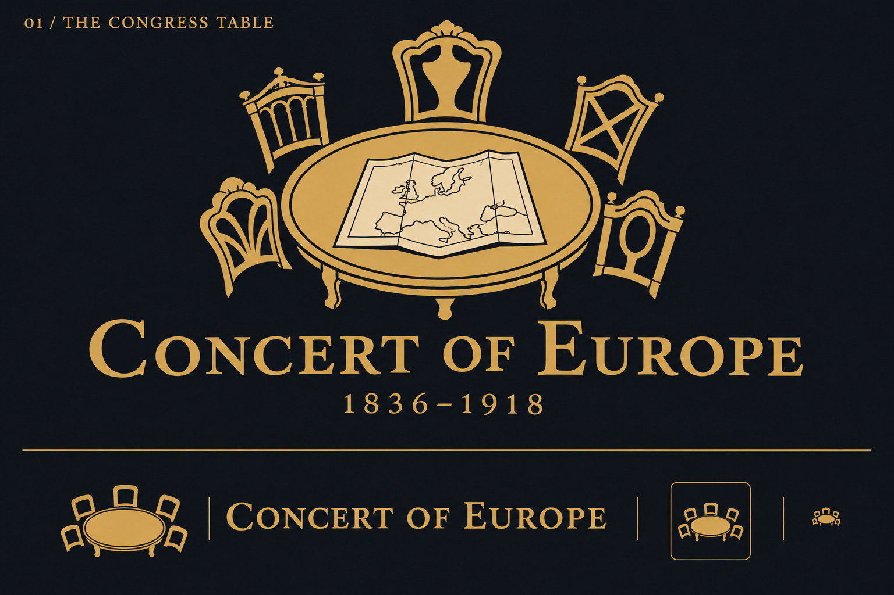
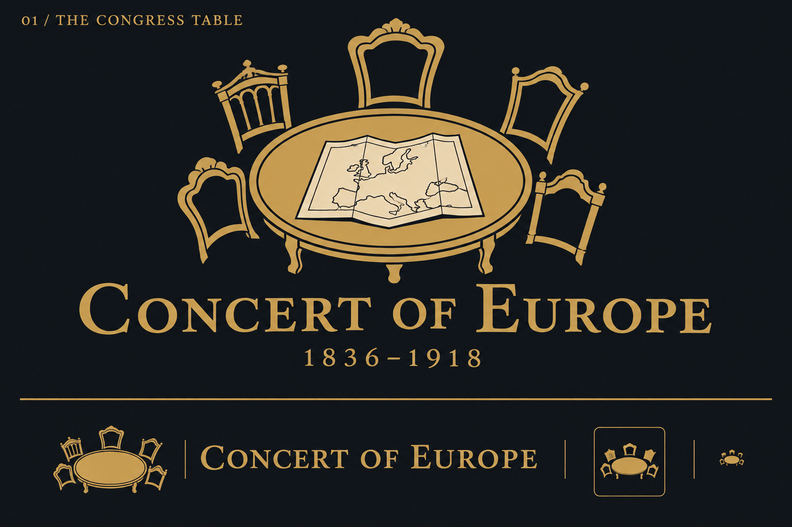
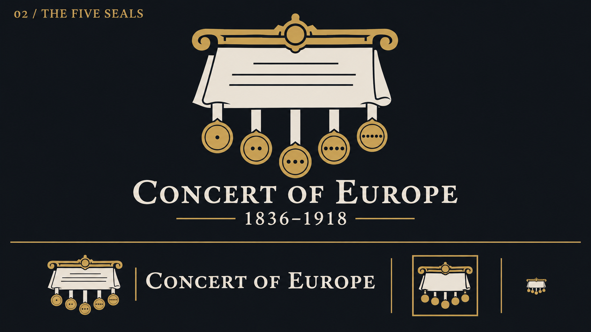
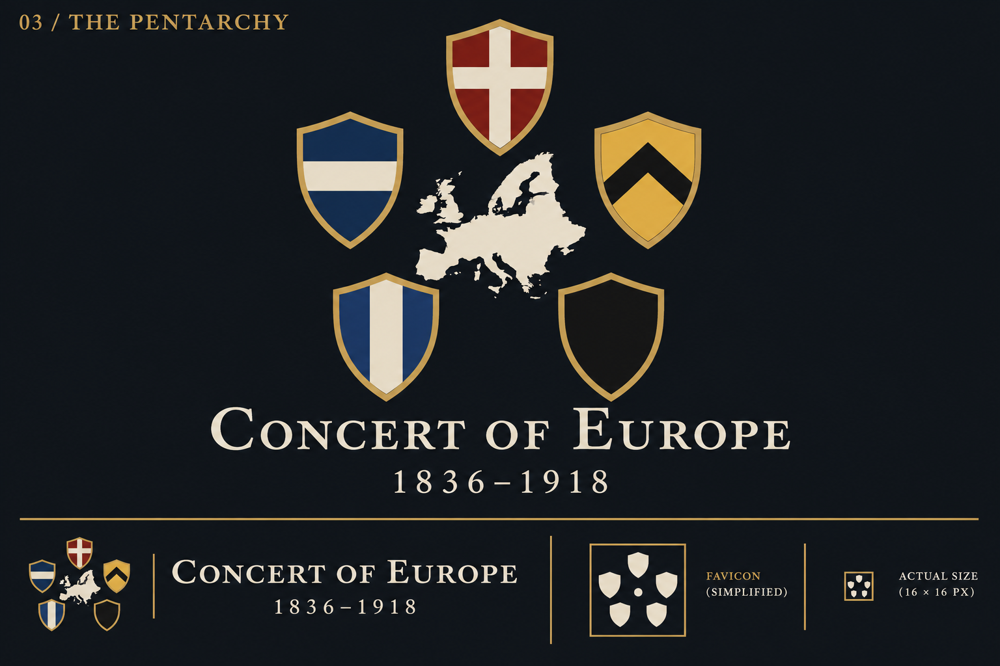

Concert of Europe — logo drafts
Concert of Europe · logo studies
Three original identities inspired by the historic five-power congress system. Each proof explores a title-screen logo, compact menu lockup and simplified favicon direction.
Local concept proofs · 8 November 2026 · Generated with built-in ImageGen. Small icons shown within the artwork are illustrative, not final pixel-size exports.
01 / The Congress Table · Version 2
Revised. The large emblem has five distinct chair backs: spindles, a shaped splat, crossed rails, fan fretwork and an oval. The menu and favicon concepts use five matching plain chair backs for a calmer silhouette.

Compare the original

02 / The Five Seals
A treaty signed by five powers. More formal and document-led, with a distinctive row of hanging seals.

03 / The Pentarchy
Five heraldic shields surrounding Europe. These shield devices are symbolic inventions, not authentic national arms; a historically specific version would need researched replacements.
